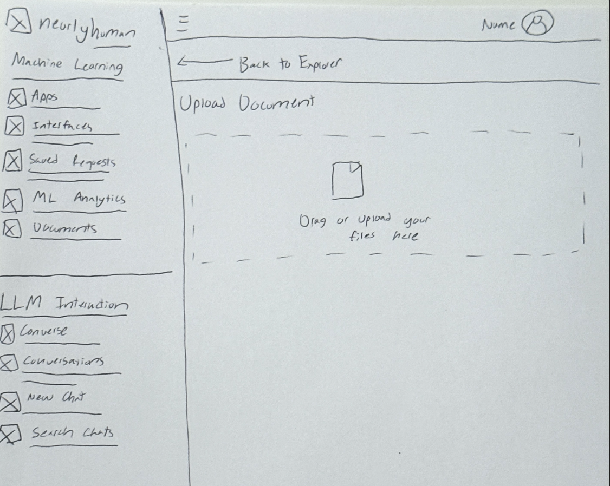
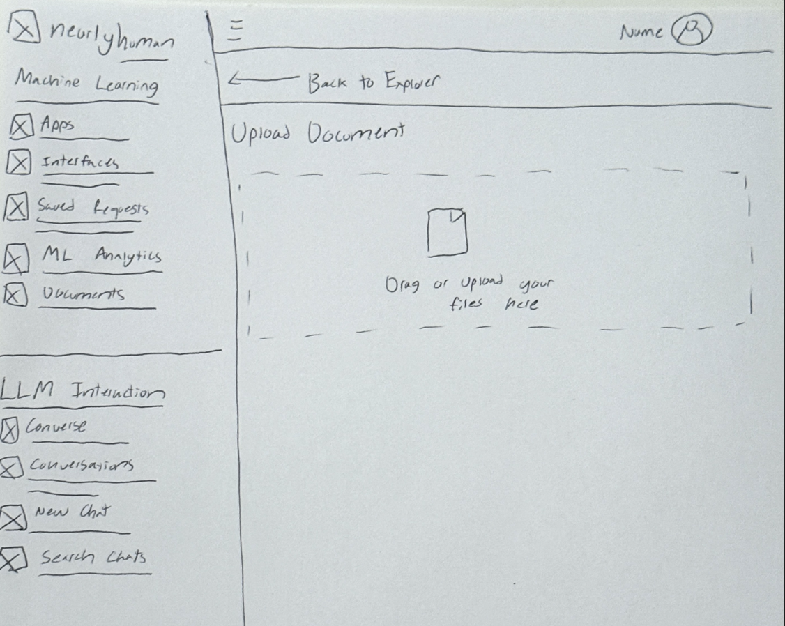
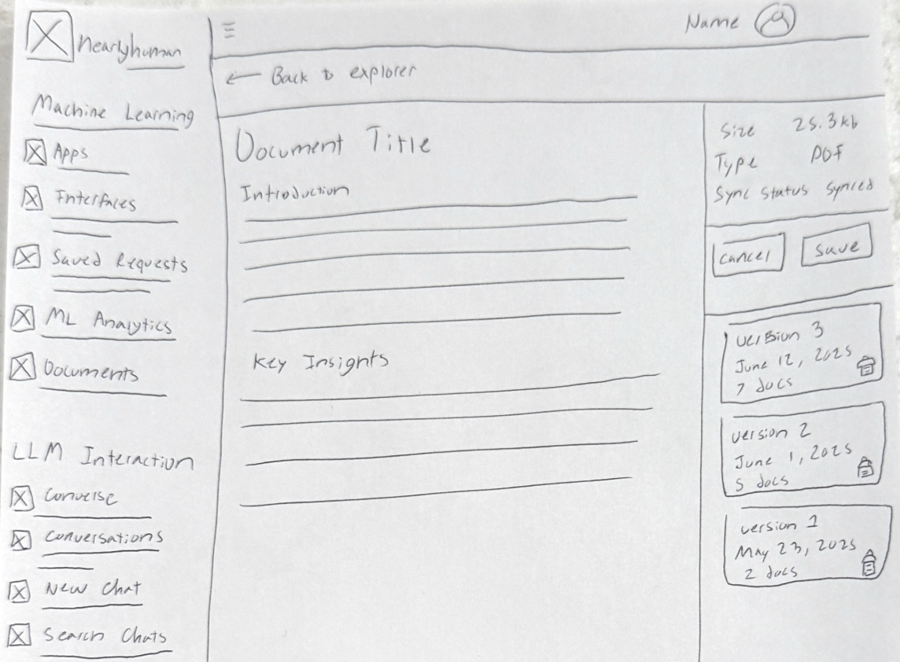
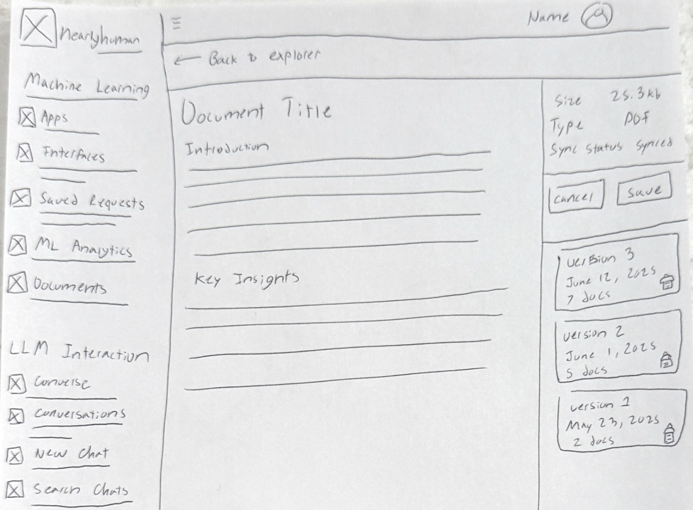
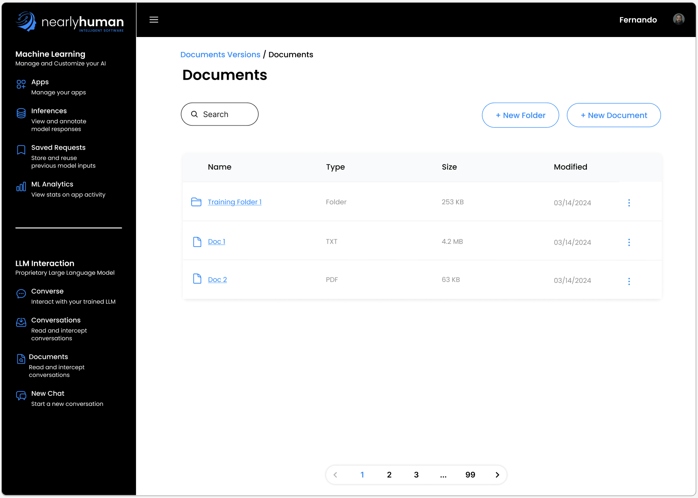
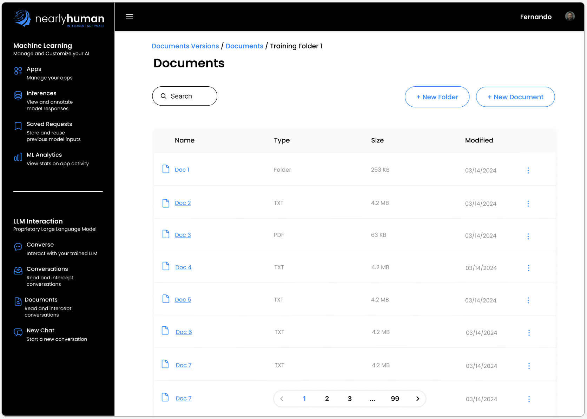
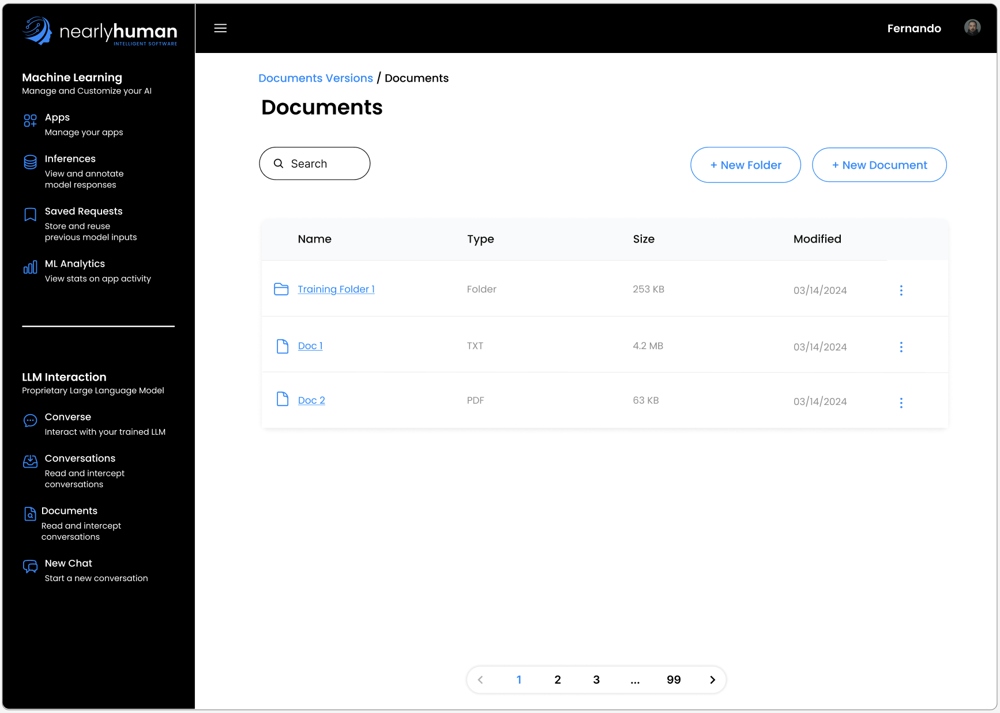
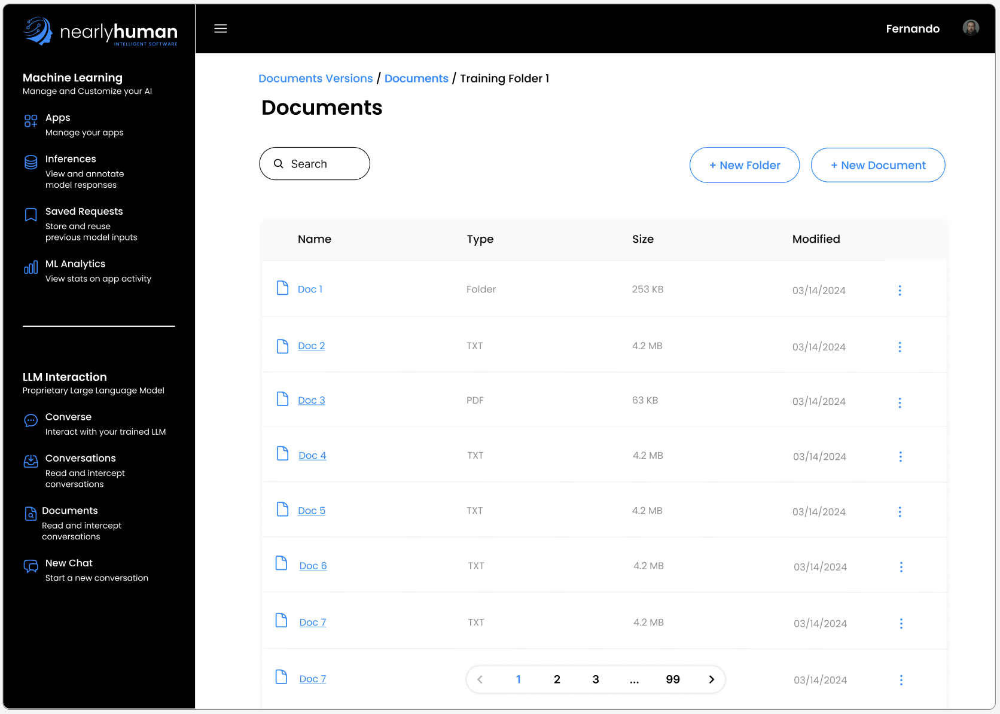
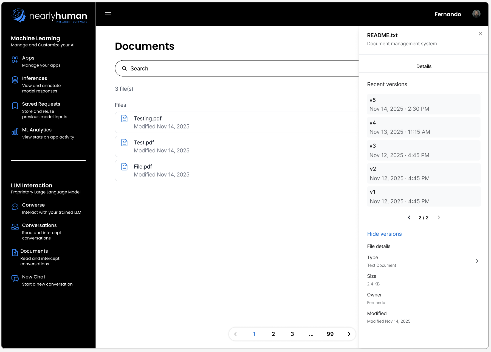
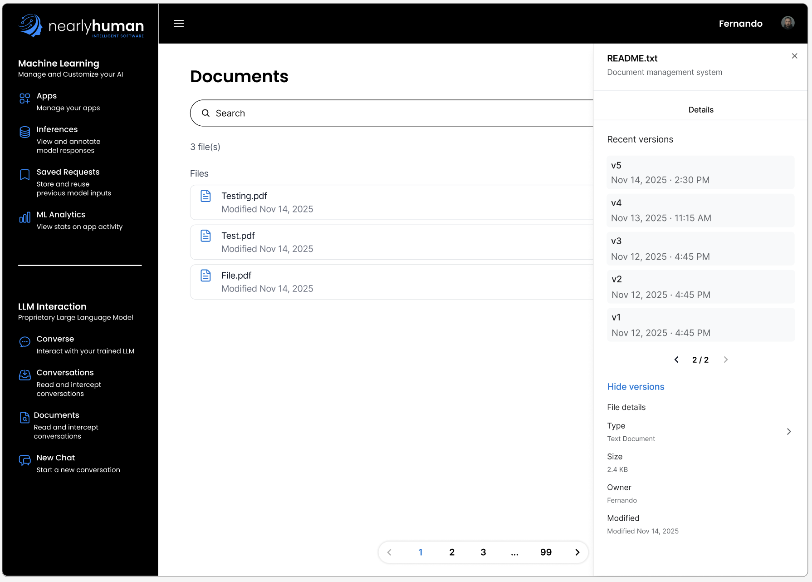

NearlyHuman
Documents & Versioning UX
UX Design Case Study
I designed a scalable documents system for training Large Language Models, creating tailored experiences for both managers and developers while iterating through low- and high-fidelity designs.
Project Overview
ROLE
I served as the UX Designer for this project during my internship at NearlyHuman. I was responsible for designing the Documents experience end-to-end, creating both Manager and Developer views, producing wireframes and prototypes, and iterating designs based on stakeholder and engineering feedback.
TOOLS
Figma
This project centered on creating a Documents feature for NearlyHuman that allowed users to upload, organize, and version files used to train their Large Language Models. The system had to support both non-technical managers and technical developers, while remaining clear, scalable, and safe to use. This case study focuses on the information architecture and versioning flows behind the final solution.
The Problem
Users struggled to understand:
- How files, collections, and versions relate to one another
- Which documents were actively used to train their model
- How to safely modify documents without breaking workflows
The challenge was to design a system that felt approachable for managers while still offering precision and transparency for developers.
Goals
- Clarify document organization and version relationships
- Support multiple user types without duplicating complexity
- Create scalable patterns for large document libraries
- Reduce cognitive load while maintaining control
Design Process
Low-Fidelity Wireframes
I started with low-fidelity wireframes to quickly explore layout options and align with the NearlyHuman team on structure and workflows. These wireframes helped clarify:
- What information needed to be surfaced first
- How collections and files should be grouped
- What actions were most important for each user type
This stage allowed for fast feedback before investing in detailed visuals.
 


 

High-Fidelity Iteration
Instead of mid-fidelity wireframes, I moved directly into high-fidelity designs once structure was approved. NearlyHuman already had an established design system, including predefined components, icons, and buttons, which allowed me to design within real product constraints from the start.
I went through multiple rounds of high-fidelity iteration, refining:
- Visual hierarchy and spacing
- Action placement and affordances
- Collection vs file distinction
- Pagination and scaling behaviors
 





Information Architecture
I restructured the Documents page to clearly separate:
- Collections — grouped sets of training documents
- Files — individual documents, both assigned and unassigned
This made it easier for users to understand what content was grouped, what wasn't, and how documents related to model training.
Manager vs Developer Views
Manager View
- Focused on organization and clarity
- Simplified interactions and terminology
- Reduced risk of accidental destructive actions
 

Developer View
- Increased visibility into document versions
- Clear indicators of active vs inactive documents
- Designed to support debugging and iteration workflows
Although this case study highlights information and versioning flows, I designed full end-to-end experiences for both views to ensure consistency across the platform.
Collaboration & Communication
This project strengthened my ability to collaborate across disciplines and experience levels. I regularly worked with:
- Engineers to ensure designs were technically feasible
- Product stakeholders to align UX with business goals
- Other interns to maintain design consistency
Through this process, I learned how to adapt my communication — explaining interaction logic to engineers while framing UX decisions in user-focused terms for non-technical stakeholders.
Final Outcome
The final designs delivered:
- A scalable documents system ready for real-world use
- Clear mental models for files, collections, and versions
- Reduced confusion for non-technical users
- Greater transparency and control for developers
Key Learnings
- Designing for multiple user types requires intentional simplification
- High-fidelity prototypes are essential for complex systems
- Strong UX depends on communication as much as visuals
- Iteration leads to more resilient product decisions
Next Steps
With more time, I would:
- Add document version comparison tools
- Introduce advanced filtering and tagging
- Conduct usability testing with live customers
- Explore bulk actions for power users